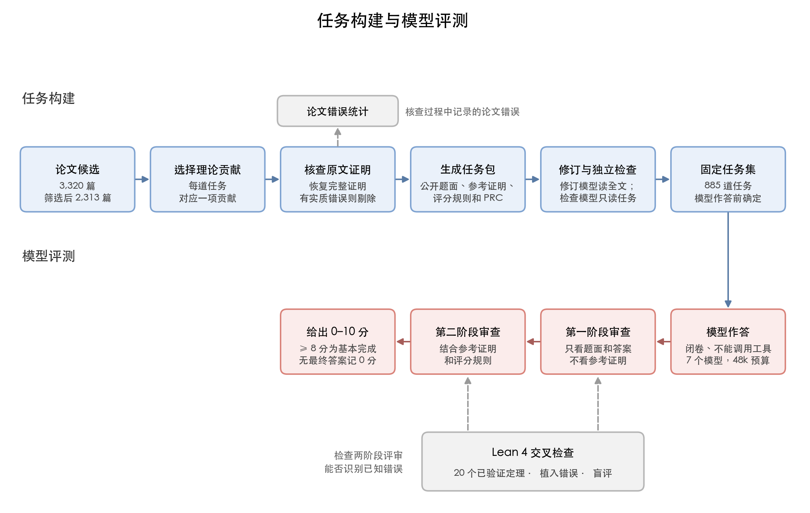
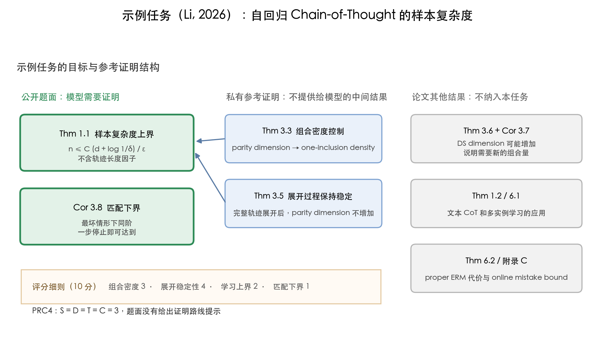

1. 背景
1.1 研究问题与动机
2026 年 10 月，OpenAI 公开了一批由内部模型得到的数学研究结果，其中部分附有 Lean 形式化证明 (OpenAI, 2026)。这类展示说明了模型可以得到研究级的结果，但它们只呈现了成功的案例。对研究者来说，同样重要的是另一组问题：在一组事先确定的研究级问题上，给定相同的计算预算和尝试次数，模型能完整证明多少？没有完成的答案取得了哪些有效进展，又缺少哪些关键步骤？
回答这些问题需要满足三个条件。第一，题目集合要在评测之前固定，并覆盖不同的难度，才能计算完成比例，判断失败集中在哪类题目上。第二，所有模型要在相同的输入、工具和 token 预算下作答，结果才能直接比较。第三，评分要记录完整证明、部分进展和错误证明各自完成了哪些数学工作。MLtheorybench 就是按这三个条件构建的。
我们选择机器学习理论作为题目来源，原因有三。其一，这个领域论文数量大，2026 年 1 月至 7 月仅 stat.ML、cs.LG 和 math.OC 三个分类就有 3,320 篇相关论文；使用近期论文，可以减少原证明出现在模型训练数据中的机会。其二，每篇论文都附有人写的证明，可以作为参考证明使用。其三，机器学习理论的证明对条件和推导细节要求严格，例如区分期望界和高概率界、区分固定参数和由数据选出的参数，这类细节适合检验一份证明是否真正完整。
直接从论文出题会遇到三个问题。论文的定义和假设分散在全文，单独摘出定理会遗漏条件；论文本身可能有错，不能直接把原文证明当作标准答案；研究级证明数量大，评分需要借助模型，因此还要检验模型评分是否可靠。
第 2 节说明数据集的构造，包括论文筛选、任务单位、任务核查、作答前的复杂度分级，以及构建过程中统计到的论文错误；第 3 节先说明作答与评分方式，用基于 Lean 4 的交叉检查检验评审模型的可靠性，再给出模型结果；第 4 节总结主要发现，并讨论后续工作。
MLtheorybench 将近期机器学习理论论文中的证明整理成固定任务，让七个模型在相同预算下作答，并按完成的核心步骤评分。评测同时检查评审模型识别证明错误的可靠性。

1.2 示例任务
每一步由局部规则根据当前状态选择一个动作，再把这个动作加入已有历史，继续生成，直到停止。这些动作按顺序组成一条轨迹。学习目标是预测整条轨迹，其中任何一个位置与真实轨迹不同，都算一次预测错误。
设局部预测规则的集合为 ℋ，d = DSdim(ℋ) 为它的 DS 维数，这是多分类学习中衡量规则集合复杂程度的一个量。PAC 学习要求控制两个概率：学到的规则在新样本上预测整条轨迹的出错概率不超过 ε；对随机抽取的训练样本，这一保证以至少 1 − δ 的概率成立。任务要求证明，达到这一要求所需的训练样本数满足
n(ε, δ) ≤ C · (d + log(1/δ)) / ε，
其中 C 为常数。还要证明最坏情形下的样本数下界与这个上界同阶。上界中没有轨迹长度这一因子；生成过程只需每次最终停止，轨迹长度可以没有统一上限。
- 题面条件：局部规则、轨迹生成过程、停止条件和 PAC 学习目标。
- 目标结论：证明不含轨迹长度因子的样本复杂度上界，并证明最坏情形下的匹配下界。
- 证明结构：题面只给出最终要证明的上界和下界。上界的证明还需要两个中间结果，它们留在参考证明中，由解题者自行发现和证明。
- 后文用途：后面用这道任务说明任务选取、PRC 定级和评分的具体做法。
2. 数据集构造
本节说明如何从论文得到预先固定的任务：先筛选论文（2.1），确定每道任务覆盖的内容（2.2），核查题面和参考证明（2.3），在作答之前评定任务的复杂度（2.4），最后报告核查过程中统计到的论文错误（2.5）。
最终构建了 885 道经过核查的任务，每道覆盖一项主要理论贡献，证明重建复杂度（PRC）在模型作答前评定。在通过理论筛选的 2,313 篇论文中，57.2% 保留了实质错误记录，25.9% 的论文影响达到 3–4 级，即重要的核心结论或主要理论贡献失去支持。
2.1 论文收集与筛选
我们收集了 arXiv 上 2026 年 1 月 1 日至 7 月 27 日的 3,320 篇论文，来源和数量如下：
| 来源 | 篇数 |
|---|---|
| 主分类为 stat.ML | 1,583 |
| 主分类为 cs.LG，同时交叉列入 stat.ML | 1,448 |
| 主分类为 math.OC，经标题和摘要筛选与机器学习相关 | 289 |
| 合计 | 3,320 |
按分类收集的论文不一定有足以构成任务的理论内容。抽样中我们发现，部分论文以实验为主体；部分论文虽然有定理，但只是补充解释实验现象，没有说明方法为什么有效。
因此我们先对每篇论文做贡献分类。理论内容仅限于解释实验现象或常规推导的论文被筛除；以新的理论结果为主要贡献的论文直接进入构建；以方法等其他内容为主要贡献的论文，再判断其中是否有足够完整、有代表性的证明可以构成任务。分类依据是论文实际包含的理论内容。初步被筛除的论文还会经过一次独立复核。这一步排除了 1,007 篇，保留 2,313 篇进入后续构建。
为减少模型复现已有答案的机会，我们在三个环节采取措施。选材时使用近期论文，减少原证明出现在训练数据中的机会。构建任务时，去掉标题、作者、arXiv 编号、原定理编号和有辨识度的方法名，减少指向原论文的线索。作答时只提供题面和统一的作答要求，不提供原文、参考证明和评分细则，并禁止搜索、检索和其他工具调用。
2.2 任务单位：一项理论贡献
机器学习理论论文的结构决定了不能简单地把一个定理当作一道题。一方面，研究级的定理通常依赖具体的数据模型、算法设置和正则条件，这些内容分散在论文不同位置，并被多个定理共同沿用；直接摘录定理陈述，容易遗漏必要条件。另一方面，一项理论贡献常由多个结果共同表达：上界与匹配的下界一起确定最优阶数，一般定理与关键应用一起说明结论如何用于具体问题。证明的主要困难也可能集中在支撑主定理的引理中。
我们早期尝试过两种做法。第一种是一个定理一道题。如果定理 B 的证明用到定理 A，不提供 A 会使两道题的证明工作大量重叠；直接提供 A 又可能给出最重要的中间步骤，使 B 变成简单推论。第二种是把一篇论文的所有定理写成一组小题。小题的顺序会提示证明路线；论文中的独立分支合在一起，还会增加与主要证明困难无关的工作量，影响复杂度评估。
因此，我们让每道任务对应论文的一项主要理论贡献：选出一组共同回答同一研究问题的结论，并保留证明这些结论所需的主要工作。这些结论不必相互依赖，但需要共同说明同一问题，例如匹配的上下界、一对充分必要条件，或者紧密结合的一般结论与关键应用。题面把这些结论作为同一个证明任务提出。关键中间结果只写在不向解题者提供的参考证明中，由解题者自己发现和证明。

这道示例任务选择样本复杂度上界与匹配下界，因为两者合起来确定了最优阶数。支撑上界的两个中间结果留在参考证明中，不列成小题。论文中的其他反例和应用不纳入这道任务，具体结果见图 2。
选取结论分两步。第一步，负责读取全文的模型整理论文的理论材料，最多给出四组候选结论，并从三个方面各打 0–3 分：是否覆盖论文的主要理论内容，结论与支撑它们的证明是否完整，各结果是否属于同一主线。任一项为 0 分即排除，总分至少 8/9 才进入后续比较；合格的候选再比较是否保留了原证明的主要难点和关键方法。示例任务中，"上界加匹配下界"这组结论得 9 分，另一组围绕论文引入的组合维数及其性质的结论得 8 分。
第二步核查选中结果的推导是否正确。先选取结论，再核查证明，可以让选题依据理论贡献本身来进行。
我们还尝试过先画出整篇论文的定理依赖图，标出每个证明用到了哪些结果，再选择任务。但通读全文得到的依赖图经常有遗漏，逐对检查结果之间的依赖又需要大量工作。因此，我们先列出论文中的定义、假设和理论结果，再针对候选结论补全所需的定义、引理和外部结果；遗漏的条件在后续结合全文的修订中补回（2.3 节）。如果某个上游结果有实质错误，依赖它的结论也会被标记。
选定结论后，构建步骤生成三个核心文件：公开题面，覆盖目标结论的参考证明，以及把 10 分分配给 2–5 个核心步骤的评分细则；另有一份对照记录，把题面条件和参考证明的步骤对应到原文位置。解题者只能看到题面。所有任务统一允许使用已有的标准数学定理，不在题面中单列可用引理，以免提示解题路线；评分接受参考证明以外的其他正确路线。
2.3 任务核查
理论论文的证明经常省略步骤。多数省略是可以按常规知识补全的推导，但也有一部分掩盖了缺失的假设或无效的推理。如果参考证明本身有错，按它评分会把错误带进评分；如果题面漏掉了原文的条件，题目结论本身可能不成立。因此每道任务在交给模型之前要经过两轮核查。
核查原文证明。选出候选结论之后，模型恢复它们的完整陈述和证明，包括定理框以外的共同假设，并分别检查定理陈述是否成立、证明是否完整，标记为正确、只需局部修正或存在影响结论的问题。系统按候选结论组的排序依次检查，选择第一组不含实质错误的结论；所有合格的候选组都有实质错误时，这篇论文不出题。错误位于未选中的分支时，论文仍可以通过另一组有效的结论提供任务，其他结果的错误单独记录（见 2.5 节）。
修订与检查分开进行。初次构建时只向出题模型提供选中的相关材料，目的是让它专注于选中的贡献，减少无关分支和原文叙述进入题面。但这样做有两个后果：如果前一步整理材料时遗漏了某个写在别处的共同假设，出题模型无法自行发现；而生成与自审在同一段对话中进行时，模型也容易沿用此前对数学内容的理解，检查不出构造中的问题。后续测试中，我们确实发现部分题面遗漏了没有被材料摘录保留的共同假设。
因此我们增加了一轮修订，并把修订和检查放在不同会话中。修订模型读取原论文、最新的题面、参考证明和评分细则，核对随机变量服从什么分布、参数按什么顺序选取、每一步可以使用哪些信息，以及界中的常数依赖哪些参数，修正遗漏或摘录错误。
检查模型每次在新会话中只接收最新的题面和参考证明，针对具体疑点展开推导或构造反例，判断问题来自参考证明的缺口还是题目结论本身。每次修改后重新开启一个检查会话，最多进行三次检查、两次反馈修订，并固定最后一次实际通过检查的版本。确认原文有实质问题的任务记为论文问题；达到反馈上限仍未解决的任务不进入正式评分。
最终的正式任务集包含 885 道题，其中 867 道有全部七个模型的评分，下文的模型比较都使用这 867 道题。人工抽查的十余道最终任务中，没有发现实质性的题面或参考证明错误。
2.4 证明重建复杂度（PRC）
arXiv 论文的理论深度差异很大。即使排除了理论内容不足的论文，剩下的任务中仍有大量相对简单的证明。它们会抬高总体均分，使不同模型在难题上的差异不容易看出来，所以需要按任务的复杂度分组报告结果。分组必须在模型作答之前、只根据任务本身来确定：如果先用得分定义难度，再用难度解释得分，就无法独立检验分级是否合理。
我们把这个量称为证明重建复杂度（Proof Reconstruction Complexity，PRC）：只给出题面、允许使用标准数学知识时，找到完整证明需要提出什么思路、证明哪些中间结论、完成哪些困难推导，以及结合哪些数学工具。设计上参考了教育测量中对"复杂度"和"难度"的区分 (Webb; TIMSS 2023; PISA 2022)：复杂度在作答前根据任务需要哪些思路和推导来评定；难度则从实际作答表现中观察。
评估者先列出题面尚未给出的关键证明步骤，一般为 3–7 个，例如构造证明所需的函数、给出误差估计、证明反方向。然后从四个维度各打 0–3 分：
| 维度 | 评价内容 | 从低分到高分 |
|---|---|---|
| S 策略发现 | 找到证明路线需要多少超出定义和常见做法的想法 | 套用定义或常见证明方法 → 自行找到并结合多个关键证明思路 |
| D 子目标结构 | 需要证明哪些中间结论，它们如何相互依赖 | 单个中间结论或短的推导链 → 多组中间结论相互依赖，共同支持最终结论 |
| T 技术执行 | 证明路线确定后，具体推导有多困难 | 直接计算或常规推导 → 多处需要专门设计推导或构造才能完成的步骤 |
| C 能力整合 | 证明需要结合哪些数学工具 | 主要使用一种工具 → 同时依靠概率估计、分析、组合论证和构造等方法完成关键步骤 |
四个维度分开评分，是因为复杂度有不同的来源：需要组织许多简单中间结论的证明，D 可能较高、T 较低；中间结论很少但包含困难估计的证明，D 可能较低、T 较高。任何维度给 2 或 3 分都需要写出具体的数学依据；T 给 3 分还要求列出至少两处研究级的困难步骤，并说明它们为什么无法用常规推导完成。"篇幅长""符号多""使用高级名词"都不能单独作为理由。
评分时还要检查题面是否透露了证明路线：如果透露了，任务的实际复杂度会低于看上去的复杂度。如果题面只透露了有限的提示，总分扣 1 分；如果透露了多个关键的中间目标或决定性的方法，必须先修订题面，再重新评定。
四个维度的分数相加，再扣除提示对应的分数，按下图分为 PRC0 到 PRC4 五个等级。其中 PRC4 除总分不低于 11 外，还要求策略发现和技术执行同时为 3 分，即找到证明思路和完成具体推导都要达到最高一档的要求。867 道任务中，PRC0 到 PRC4 分别有 61、316、237、109 和 144 道。

示例任务的评定为 S = D = T = C = 3，题面没有透露证明路线，属于 PRC4。依据来自原文的证明结构：解题者需要找到一个适合描述局部规则的组合维数，证明它能给出学习所需的复杂度上界，再证明生成完整轨迹时这个维数不会增加，最后据此推出题目要求的样本数上界。直接使用 DS 维数无法完成证明，因为原文 Theorem 3.6 构造了局部 DS 维数为 2、完整轨迹的 DS 维数至少为 3 的反例。这一评定在任何模型作答之前完成。
PRC 在作答前确定，之后没有根据结果修改，因此可以用作答结果检验它（各模型的分组结果见 3.3 节）。七个模型中，PRC 等级越高，得分总体上越低：GPT-5.6 和 GPT-6 的 Spearman 相关系数分别为 −0.276 和 −0.221，其余模型在 −0.580 至 −0.691 之间。两个 GPT 模型的得分集中在高分区间，相关性因此较弱。
2.5 构建过程中统计的论文错误
核查原文证明和后续修订时（2.3 节），我们也记录了论文中的错误。部分错误可以通过补充假设或修改推导来修复，但修复可能改变结果的适用范围。因此，我们分别记录错误发生的环节、修复所需的数学工作，以及修复后原有理论贡献保留了多少。
审查只保留对数学论证有实质影响的问题，排除上下文已能确定读法的笔误、可按常规知识直接补全的省略，以及不改变条件、结论和证明结构的局部小错。
评估分三个层次进行。对单条错误，判断它属于哪一类、修复需要多少新的数学工作（修复难度）。对单个结果，合并它自身和上游结果所需的修复，判断条件、适用范围和结论强度改变了多少（结果影响）。对整篇论文，再结合各结果之间的依赖，判断主要理论贡献还保留多少（论文影响）。一个定理出错，可能只影响论文的一部分；多个结果的适用范围同时缩小，也可能使主要贡献失去支持。
每篇论文由两个审查模型在独立会话中分别检查，再由能读取原文的复核模型核实全部候选问题。复核时排除笔误和不成立的错误判断，合并重复描述，拆开相互独立的错误，并重新核验反例，最后给出修复难度、结果影响和论文影响的评定。在人工校对的少量样本上，这一流程的判断比单次审查更接近人工判断。

以通过理论筛选的 2,313 篇论文为分母，1,322 篇（57.2%）在复核后保留了实质错误记录，633 篇（27.4%）在现有审查中没有保留实质错误，358 篇（15.5%）仍需核实错误证据或完成影响评估。在 1,322 篇有错误记录的论文中，共审查 4,426 个结果，保留 8,522 条错误，每篇的中位数为 4 条，均值为 6.45 条。
错误按论证中失败的环节分为四类：
- 推理不成立（50.4%）：推导或定理调用不受已有前提支持，例如把对固定参数成立的概率保证用于由同一组数据选出的参数。
- 计算错误（21.9%）：公式推导或数值计算中出现了影响结果的运算错误。
- 论证不完整（14.1%）：已完成的步骤没有覆盖完整目标，例如只证明了期望界，却宣称得到了高概率保证。
- 所需对象不存在（13.6%）：陈述要求的对象在允许的条件下不存在，例如函数只有下确界、却没有点能达到它，证明仍直接使用最优解。
按失败环节分类，可以在尚未找到反例时记录证明中的具体问题。若按"证明错误"和"陈述错误"分类，同一个问题可能在找到反例后改变类别，使分类依赖审查者构造反例的能力。
修复难度分为四级：1 级可直接修正；2 级需要补充范围明确的局部论证；3 级需要重建关键论证，或修改关键步骤所用的条件和结论；4 级有证据表明，需要重做原证明的主要方法或撤回结果。8,513 条有数值等级的错误中，平均修复难度为 1.47，57.1% 可以直接修正。
需要 2 级及以上修复的错误中，推理不成立与论证不完整合计占 80.3%，主要涉及定理调用不当、缺少连接中间结果与目标结论的论证，以及把一个概率分布下得到的结论直接用于条件分布或另一组随机变量，却没有证明这种用法成立。
修复工作量和对贡献的影响需要分别判断。例如，一个算法每轮需要 O(n) 的工作，共执行 n 轮，论文却把总复杂度写成 O(n)。改为 O(n2) 只需一次重算，修复难度为 1 级。但如果线性时间是论文的主要优势，修正后这项优势就不再成立。
结果影响分为四级：1 级保留原来的主要保证和适用范围；2 级需要增加条件或缩小部分范围，但主要用途保留；3 级只能支持明显较弱的结论，失去原来重要的保证或适用情形；4 级已无法支持与原结果用途相当的有效结论。这里根据仍然有效的原文论证和可按常规知识补充的步骤判断保留了什么。
论文影响则看这些变化对整篇论文的主要贡献有多大影响：1 级主要贡献保留；2 级适用条件或次要保证有实质变化，但主要贡献保留；3 级重要的核心结论失去支持，其他有价值的结果仍然保留；4 级摘要中最主要的理论结论或方法保证失去支持。在 1,322 篇有错误记录的论文中，论文影响各级分别有 141、583、458 和 140 篇。
把修复难度与论文影响放在一起统计，论文内最难的错误只需 1 级修复、论文影响却达到 3–4 级的有 54 篇；需要 2 级修复、论文影响仍为 1 级的有 98 篇。论文影响不低于 3 级的共 598 篇，占 2,313 篇的 25.9%。
3. 评测结果
本节先说明作答设置和评分规则（3.1），再用正确性已知的样本检验评审模型的可靠性（3.2），然后给出七个模型的结果（3.3–3.6）。
模型差距主要出现在高复杂度任务上：PRC4 的基本完成率（得分 ≥ 8）为 GPT-6 的 84.7%、GPT-5.6 的 76.4%，其余五个模型中最高为 24.3%。扩展预算后，DeepSeek、Kimi 和 Qwen 在选出的 30 道任务上均提交了答案，但每个模型达到 8 分的仍只有 1–4 道。
3.1 作答设置与评分规则
作答设置
每个模型以独立请求接收相同的题面和通用作答要求，只有一次作答机会，不能联网、检索或调用工具。主实验的生成预算为 48,000 token，包含服务方计入的推理消耗。提示词明确告知模型推理和最终输出共用这一上限，并要求在无法完成全部证明时，提交已经建立的正确结果，并说明仍未解决的缺口。没有最终答案的尝试记 0 分，并保留在所有统计的分母中。
两阶段评审
如果评审一开始就看到参考证明，可能把采用不同路线的正确证明判为错误，也可能按参考证明补全答案中缺失的步骤。因此我们采用两阶段评审。这一设计参考了 VALG (Zhang et al., 2026) 检查开放问题解答的流程，并增加了参考证明对照和部分分评分。
第一阶段评审只看题面和匿名答案，不看参考证明和评分细则。它检查答案使用的假设、外部定理的适用条件和关键推导，只依据答案实际写出的数学内容判断证明是否成立，不能自行补全缺失的步骤。
第二阶段评审随后结合答案、第一阶段的报告、参考证明和评分细则，核实报告中的问题，把答案已经完成的工作对应到评分细则的核心步骤上，给出分数。同一任务的多份匿名答案在同一次评审中分别评分，以减少分批评分时标准不一致的问题。主实验的评审模型为 GPT-6。
十分制与部分分
研究级证明的完成情况需要细分。例如，一份答案可能证明了关键引理，却没有完成从引理到目标结论的转换；也可能得到了正确的下界，却没有解决主要的上界。只记录"完成"或"未完成"会丢失这些信息。因此我们按已完成的数学工作给分：
| 得分 | 对应的完成程度 |
|---|---|
| 0 | 没有正确的相关思路或有效方法；没有最终答案也记 0 分 |
| 1–2 | 有超出直接套用定义或常规定理的相关思路，但没有完成任何核心证明步骤 |
| 3–7 | 完成了部分实质步骤，但仍有重要缺口 |
| 8–9 | 证明基本完成，只剩无需新的核心思路即可修复的局部问题 |
| 10 | 在题目条件下完整正确 |
我们以得分不低于 8 分作为"基本完成"的标准。仍有重大逻辑缺口的答案最高 7 分，包括只给出证明计划，或者把尚未证明的核心命题直接当作标准结果使用。3–7 分区间内的具体分数，由评分细则中各核心步骤的权重决定。
部分分有两条规则。第一条处理上游错误：假设答案先证明 A，再由 A 推出 B，评分时分别核对 A 的证明和 A 到 B 的推导。如果 A 在题目条件下成立，只是答案对 A 的证明有缺口，这部分扣分，正确的下游推导仍然得分；如果 A 本身为假或不适用于当前条件，依赖 A 的推导不得分。第二条处理替代路线：答案采用与参考证明不同的有效路线时，按该路线实际完成的目标给分；完整正确的替代证明可以得满分。
示例任务的评分细则把 10 分分为四个核心步骤：用组合维数给出组合密度的上界 3 分，证明生成完整轨迹时该维数不会增加 4 分，据此推出样本复杂度上界 2 分，证明同阶下界 1 分。其中组合密度是证明中用于推导学习误差上界的一个量。前两步共占 7 分，它们是得到不含轨迹长度因子的上界所需的主要证明步骤。
在判断题目是否成立、选取哪些结论、如何评定复杂度和给分时，我们都先人工审阅模型的判断，再据此修改提示词。修改后的标准先在十篇新论文上检查与人工判断是否基本一致，再固定下来用于全部数据。
3.2 基于 Lean 4 的交叉检查
人工校准只覆盖有限的样本，而真实论文和模型答案的正确性本身并不确定，难以直接用来衡量评审模型的准确率。为此，我们构造了一组正确性和错误位置都已知的样本：从经过 Lean 内核逐步核验的形式化证明出发，确认结论确实由列明的假设推出；再在它的自然语言版本中人工植入错误，错误的类别、位置和原因都是已知的。
我们从 AI4SLT (Zhang, Lee & Liu, 2026) 和 TestingLowerBounds 两个 Lean 项目中选出 20 个机器学习理论相关的定理，转写为自然语言的陈述和证明，并逐项核对定义、假设、量词和关键推导。每道题制作五个版本：一份正确证明；三份分别植入一种实质错误的证明，错误类型沿用 2.5 节的分类（论证不完整、推理不成立、计算错误）；以及一份只含局部笔误的对照。每个模型因此收到 100 份匿名提交，其中 60 份含实质错误，40 份为正确证明或笔误对照。模型不知道每份提交属于哪个版本。正确证明用于检查模型是否误报错误；笔误版本用于检查模型是否会把不影响证明的笔误判成实质错误。
其中一道题可以检验评审能否识别参数选择顺序上的错误。它要求在高斯测度下用光滑紧支函数逼近原函数，同时控制函数值和导数的误差。正确证明先固定足够大的截断半径，再根据这个半径选择足够小的平滑尺度。错误版本让两个参数同时变化，直接用固定半径下的收敛结论推断误差也趋于零，却没有证明这一结论在半径不断变化时仍然成立。我们构造了满足原假设、但沿该参数变化方式误差发散的函数，确认这一步不成立。

我们比较了 GPT-6 Astra、GLM-5.3 和 DeepSeek-V4-Pro，后两者是主作答实验中得分最低的两个模型。三个模型对实质错误的检出率分别为 60/60、57/60 和 58/60，对 20 份正确证明均没有误报实质错误；把笔误判为实质错误的次数分别为 1、1 和 0 次（各 20 份笔误对照）。主实验的评审模型 GPT-6 检出了全部 60 个植入错误，100 份报告中有 99 份与预先记录的情况完全一致，包括错误的类别、位置和理由，以及正确证明和笔误对照中没有实质错误的判断。
按这一严格标准，GLM 和 DeepSeek 分别只有 70/100 和 87/100。差异主要来自错误分类不准，以及额外报告了不存在的问题。例如，GLM 多次把换行后的普通字母读成另一个 LaTeX 符号，从而报告记号错误。这组样本中，三个评审模型较少漏掉实质错误，但在判断错误属于哪一类、发生在哪一步时，准确率仍有差异。
3.3 总体表现与按 PRC 分组的结果
| 模型 | 均分（0–10） | 基本完成率（≥ 8） | 无最终答案率 | PRC4 基本完成 |
|---|---|---|---|---|
| GPT-6 | 9.72 | 95.0% | 0.2% | 122 / 144（84.7%） |
| GPT-5.6 | 9.65 | 94.5% | 0.1% | 110 / 144（76.4%） |
| Kimi | 7.87 | 72.8% | 10.1% | 35 / 144（24.3%） |
| Claude Fable | 6.58 | 59.3% | 21.7% | 13 / 144（9.0%） |
| Qwen | 6.33 | 60.9% | 30.0% | 8 / 144（5.6%） |
| DeepSeek | 6.15 | 60.2% | 32.8% | 5 / 144（3.5%） |
| GLM | 3.40 | 34.7% | 62.3% | 1 / 144（0.7%） |
867 道固定任务，七个模型使用同一分母；无最终答案记 0 分。
两个 GPT 模型的总体均分接近满分，基本完成率约为 95%；其余五个模型的总体均分在 3.40 到 7.87 之间。按 PRC 分组后，差异主要出现在高复杂度任务上。在 PRC1 上，除 GLM 外，各模型的基本完成率在 82.6% 到 99.4% 之间；在 PRC4 上，GPT-6 和 GPT-5.6 分别基本完成 122 道和 110 道，Kimi 完成 35 道，其余模型完成 1 到 13 道。

两个 GPT 模型之间，GPT-6 的总体均分略高（9.72 对 9.65），差异主要来自 PRC4：GPT-6 的 PRC4 均分为 9.13，GPT-5.6 为 8.67。
3.4 解答完成率以及 token 消耗
这里分别统计模型在预算内提交最终答案的比例，以及答案得分不低于 8 分的比例。在 PRC4 上，Kimi、Claude Fable、Qwen、DeepSeek 和 GLM 提交最终答案的比例分别为 62.5%、37.5%、18.1%、9.0% 和 0.7%。全部 6,069 次作答中，有 1,363 次没有提交最终答案；提交了答案但得 0 分的只有 10 次。
按服务方上报的 token 分项看，PRC4 上 Qwen、DeepSeek 和 GLM 的平均推理 token 分别约为 46.8k、47.1k 和 47.8k，接近 48k 的请求预算，对应的非推理输出平均约为 668、255 和 78 个 token。这三个模型的推理消耗几乎占满预算，最终输出很少。GPT-5.6 和 GPT-6 在 PRC4 上的平均总消耗约为 27.8k 和 22.7k，其中推理约 18.7k 和 15.2k。
GPT-5.6 和 GPT-6 的 token 消耗明显较少，可能与 loop Transformer 架构有关（尚待验证）。

作答提示已写明 token 上限，并允许提交部分证明；没有最终答案按 0 分计入全部统计。48k 是请求预算，个别服务方报告的实际消耗略超过这一数值，结果按原始输出计。
3.5 扩展输出预算
上述结果引出一个问题：如果给非 GPT 模型更多预算，它们能完成多少证明？为此我们做了一组补充实验。在 10 月 14 日完成的 702 道任务中，我们选出 30 道 PRC4 任务，五个非 GPT 模型在 48k 预算下都没有在这些任务上提交最终答案。保持任务和评审流程不变，把生成预算放宽到 256k（Claude 受服务方限制，28 次请求为 128k、2 次为 256k）后重新作答。GPT-5.6 和 GPT-6 沿用原实验在这些任务上 48k 预算下的答案和分数。

DeepSeek、Kimi 和 Qwen 在扩展预算下均提交了全部 30 道题的答案，但分别有 21、21 和 23 道停在 3–7 分，达到 8 分的分别只有 1、4 和 3 道。DeepSeek 平均使用约 105.6k 生成 token。Claude 提交了 20 份答案，其中 5 份达到 8 分。GLM 的请求预算为 256k，服务方实际在 131,072 token 处截断输出，30 道中只提交了 1 道。作为对照，GPT-6 在 48k 预算下基本完成了其中 21 道。扩展预算提高了答案提交率，但多数新提交的答案仍未完成关键证明步骤。这 30 道题是按"全部非 GPT 模型均未提交"挑选的。
3.6 示例任务的作答结果
最后回到开头的示例任务，看各模型完成了哪些证明步骤。
| 模型 | 得分 | 生成 token | 作答情况 |
|---|---|---|---|
| GPT-6 | 4 | 30,718 | 完成下界和若干局部结果，明确指出主要上界尚未证明 |
| GPT-5.6 | 3 | 33,244 | 提交了证明，但主要上界依赖“完整轨迹的 DS 维数不会增加”这一不成立的命题 |
| Kimi | 2 | 42,365 | 提交了答案，没有完成关键证明步骤 |
| Claude Fable、Qwen、DeepSeek、GLM | 0 | 48,000 | 预算用尽，无最终答案 |
这道任务的主要困难，是根据局部规则的复杂度，给出学习整条轨迹所需的样本数上界。原证明引入一个组合维数（parity dimension），先用它给出组合密度的上界，再证明生成完整轨迹时这一维数不会增加。后一步需要把完整轨迹上的约束转回局部动作，并保证转换后的约束仍然有效、相关动作仍由同一个局部规则实现。仅给出归纳思路，还不足以完成这些步骤。
GPT-6 得 4 分：完成最坏情形下界（1/1），在一类特殊情形下证明了轨迹上的约束可以转为局部动作上的约束（2/4），处理了有限函数类等情形（1/2），但没有证明一般情形下的组合密度上界（0/3）。它明确指出一般上界尚未证明。
GPT-5.6 得 3 分：它直接使用"完整轨迹类的 DS 维数不超过局部规则类的 DS 维数"，再调用多分类学习理论推出上界。原文的反例表明这个中间命题不成立，因此依赖它的上界推导不得分。答案中另外调用的一般多分类学习结果仍单独核验。
4. 结论与展望
当前评测中，高复杂度证明仍能区分模型；增加生成预算后，多数新提交的答案仍只完成了部分证明。对评审模型的检查也需要同时衡量错误检出、分类、定位和误报。
4.1 主要发现
数据集方面，我们从近期机器学习理论论文中构建了 885 道经过核查的证明任务，其中 867 道有全部七个模型的评分。构建过程中的错误审查也表明，原论文的证明需要核实：在通过理论筛选的 2,313 篇论文中，57.2% 保留了实质错误记录。
模型表现方面，差距主要出现在 PRC4：两个 GPT 模型的基本完成率为 76.4%–84.7%，其余五个模型为 0.7%–24.3%。在选出的 30 道任务上增加预算后，DeepSeek、Kimi 和 Qwen 都提交了全部答案，但每个模型达到 8 分的只有 1–4 道。
评审可靠性方面，三个模型在 Lean 交叉检查中检出了 95%–100% 的植入实质错误，对正确证明没有误报。但完整报告与已知错误逐条一致的比例为 70%–99%，错误分类和额外报告的问题仍需检查。
4.2 后续工作
第一，评测模型对开放问题的作答。目前的评分依赖参考证明和评分细则，只能评测已发表的结果。对于开放问题，需要在没有参考答案的条件下评价一份证明是否完整，这要求评审更多地依赖对证明本身的检查，以及更可靠的验证手段。
第二，扩充用于交叉检查的 Lean 定理库。我们希望形式化更多近期论文中的定理，并加入从真实论文中收集的错误，使交叉检查能够更接近真实的评审场景，也能更准确地衡量评审模型对错误类别和位置的判断。
第三，扩展到更广泛的领域。MLtheorybench 的构建流程可以用于其他有大量新论文和人写证明的数学领域，例如优化、概率和信息论。评测对象也可以从闭卷、单次作答的模型，扩展到能使用工具、多次尝试的研究 agent；同一批固定的任务、参考证明和评分细则可以继续用于这些评测。
此外，我们会对高分答案和有争议的核心步骤在不显示模型名称的情况下做人工复核，并按论文的研究主题和问题类型，分析模型表现较差的任务类型。
参考文献
- OpenAI (2026, Oct 6). Sharing AI progress in mathematics.
- Li, Z. (2026). The Optimal Sample Complexity of Learning Autoregressive Chain-of-Thought. arXiv:2607.07423.
- Zhang, D., Tang, X., Yin, X., Chen, X., Qian, J., & Zou, D. (2026). VALG: An Agentic System for ML Theory Research. arXiv:2608.13060.
- Zhang, Y., Lee, J. D., & Liu, F. (2026). AI4SLT: Empirical Processes in Lean 4 for Formal Statistical Learning Theory. ICML 2026.
- Degenne, R., and contributors. TestingLowerBounds (Lean project).
- Webb Alignment Tool. Depth of Knowledge Explained.
- Mullis, I. V. S., Martin, M. O., & von Davier, M. (Eds.) (2021). TIMSS 2023 Assessment Frameworks.
- OECD (2023). PISA 2022 Mathematics Framework.
- Selden, A., & Selden, J. Errors and Misconceptions in College Level Theorem Proving. Technical Report 2003-3.
- Andersen, L. E. (2020). Acceptable Gaps in Mathematical Proofs. Synthese, 197, 233–247.
- D'Alessandro, W. (2025). Transferable and Fixable Proofs. Episteme, 22(1), 271–282.
- Vapnik, V. N., & Chervonenkis, A. Y. (1971). On the uniform convergence of relative frequencies of events to their probabilities. Theory of Probability and Its Applications, 16(2), 264–280.
- Shalev-Shwartz, S., & Ben-David, S. (2014). Understanding Machine Learning: From Theory to Algorithms. Cambridge University Press.
- Mohri, M., Rostamizadeh, A., & Talwalkar, A. (2018). Foundations of Machine Learning (2nd ed.). MIT Press.
- de Moura, L., & Ullrich, S. (2021). The Lean 4 theorem prover and its use in theorem proving. In CADE 28, Lecture Notes in Computer Science, 152–170.
- Avigad, J., de Moura, L., & Kong, S. Mathematics in Lean. Lean community documentation.